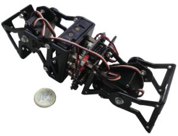
Minicube-I with MY1 modules (Click to enlarge)
Contenido
[ocultar]Introduction
Minicube-I is the minimal modular robot capable of moving forward and backward. For the assembling the following parts are needed:
- One MY1 module fully assembled (Assembly instructions)
- One Unimod type A1 (Assembly instructions
- 4 M3 bolts
- 4 M3 nuts
| 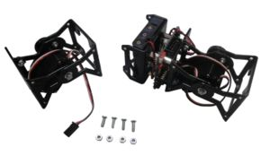 Beginning: Parts needed for assembling Minicube-I (Click to enlarge) |
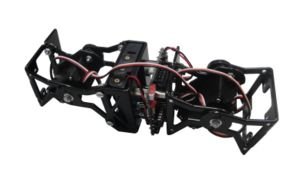 End: An assembled Minicube-I (Click to enlarge) |


Assembling
Step 1: Screw the module to Unimod A1
| 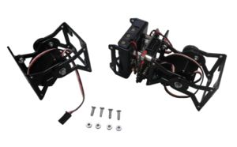 1) A MY1 module, Unimod A1 and 4 bolts(Click to enlarge) |
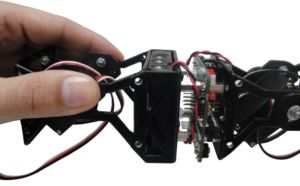 2) Joining together the module with Unimod (Click to enlarge) |
| 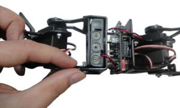 3) Placing the first bolt (Click to enlarge) |
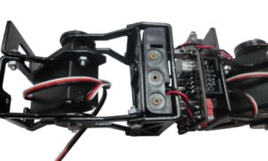 4) Placing the nut (Click para ampliar) |
| 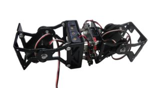 5) Place the remaining bolts and nuts (Click to enlarge) |


Step 2: Connect the servo to the Skycube board
Connect the servo to the Skycube boad. It can be connected to any available 3-pin header.
| |
| 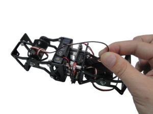 1) Connect the servo to the Skycube board (Click to enlarge) |
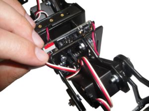 2) View of the connection of the to servos to the Skycube board(Click to enlarge) |
| 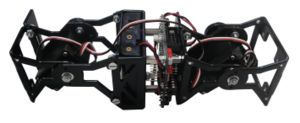 3) The robot is ready (Click to enlarge) |


Step 3 (Optional) Secure the cables using cable ties
This step is optional. Secure the cables using fastening devices such as cable ties. This will improve the robot wiring. Before fastening the cable ties, make sure the modules can move the whole range (180 degrees). Also check that the servo wires are not too tight.
| 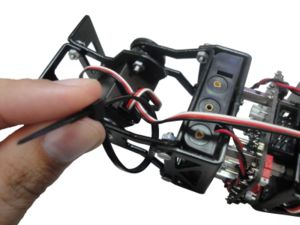 1) Place the cable tie around one wire (Click to enlarge) |
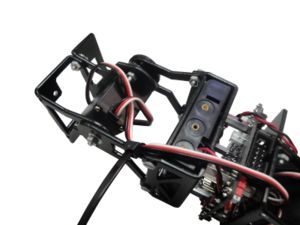 2) Fasten the tie until it holds the wire (Click to enlarge) |
| 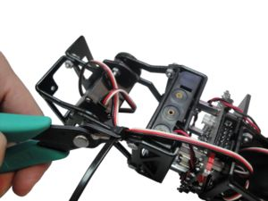 3) Cut the excess tie using a plier (Click to enlarge) |
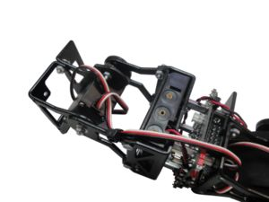 4) One wire is already secured (Click to enlarge) |
| 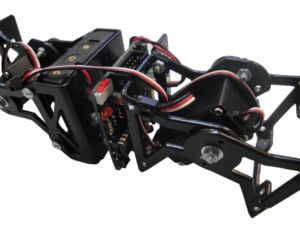 5) Repeat for the other wire (Click to enlarge) |
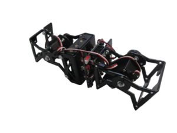 6) The final result (Click to enlarge) |


Pictures
| Photo album |
Links
News
- 23/Feb/2011: This page is created!